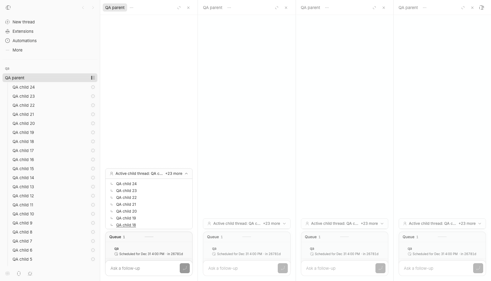
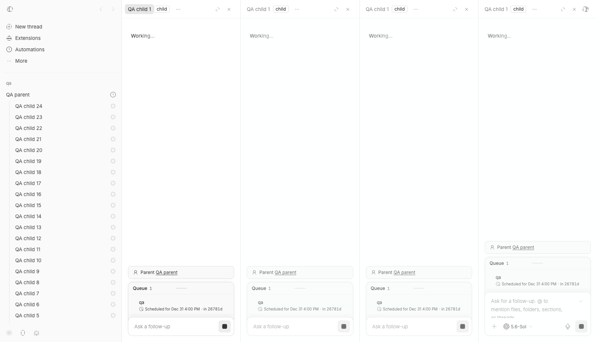

#3062 · Restored split layouts allow duplicate thread content
Verdict: REPRODUCED · Root-cause confidence: high
1. TL;DR
A restored split layout may contain several panes that all point to the same thread. Current main accepts that persisted value and mounts a complete thread view for every pane, so every thread-owned header and context control appears once per duplicate. An isolated fixture with one parent and 24 active children produced four identical child cards; switching the duplicate content to one child produced four identical parent links. The exact state repeated in a second clean checkout, and a focused regression test failed with four matching views instead of one.
2. Claims vs findings
| Claim | Status | Evidence |
|---|---|---|
| The same 24-child affordance can appear four times and expose the same children. | Verified | The isolated browser run found four Child threads regions. Expanding the first showed the same 24-row fixture represented by every card. |
| The same parent title can appear once per visible column. | Verified | Restoring four panes for one child rendered four parent-context links with the same parent title. |
| The controls are duplicated by one component render loop. | Refuted | The DOM contains four data-split-pane-id roots. Each root intentionally owns one full thread view; the bad state is duplicate logical content across accepted pane nodes. |
| The incident began without any previously persisted split state. | Unverified | No incident screenshot or browser storage was attached. Current interaction code avoids opening an already-open thread twice, so the writer of the duplicate persisted state was not established. |
Current main protects restoration from duplicate thread content. | Refuted | Both clean runs restored four copies and failed the same one-pane assertion. |
3. Environment
- Trusted repository:
get-bb/bb, commitd39bca3ebfa8e00ffcb9810b7d333a03f12c2bb0, fetchedorigin/mainat investigation time. - macOS arm64, Node.js v22.22.3, pnpm 9.15.0, doobie 0.1.2 with isolated headless Chrome.
- Checkout A used isolated app/server/host ports
12820,20820, and28820with a launcher-generated QA data directory. - Checkout B was a separate detached worktree at the same commit and used no live process.
- Both checkouts completed the frozen install and full Turbo build. No provider turn was started.
4. Minimal reproduction
- At the trusted commit, persist a version-1 split layout containing four unique pane IDs whose
contentvalues all identify the same thread. - Open that thread route in the desktop-width app.
- Observe four split-pane roots and four complete thread surfaces. With 24 active child fixtures, observe four identical child cards; with a child as the repeated content, observe four identical parent links.
- Run the focused component regression test below.
it("restores at most one pane for the same thread", async () => {
window.localStorage.setItem(
SPLIT_LAYOUT_STORAGE_KEY,
serializeSplitLayout({
root: {
type: "split",
dir: "row",
sizes: [0.25, 0.25, 0.25, 0.25],
children: ["pane-1", "pane-2", "pane-3", "pane-4"].map(
(paneId) => ({
type: "pane" as const,
paneId,
content: threadContent("thr-a"),
}),
),
},
focusedPaneId: "pane-4",
}),
);
renderSplitArea({ path: threadPath("thr-a") });
expect(await screen.findAllByTestId("pane-thr-a")).toHaveLength(1);
});Expected: one matching thread pane. Actual in both clean runs:
AssertionError: expected [...] to have a length of 1 but got 4 Test Files 1 failed | 2 passed (3) Tests 1 failed | 48 passed (49)


Artifacts: focused regression patch and direct run evidence.
Verification
The same focused test was applied to a second clean detached checkout at the recorded base commit after a frozen install and full Turbo build. It again failed with one new failed test, 48 passing tests, and an actual matching-pane count of four. No report claim changed after verification.
5. Root cause
The persistence schema enumerates every pane, limits the pane count, confirms that the focused pane exists, and requires pane IDs to be unique. It does not require logical pane content to be unique (persistence validation lines 71–100). As a result, four distinct IDs with the same thread content pass deserializeSplitLayout.
The split renderer then maps every accepted child node into its own recursive tree and full WorkspacePaneContent (rendering lines 770–843). Each mount independently derives the same child list or parent context from the same thread ID, which directly produces the repeated controls.
Route reconciliation finds only the first pane matching the routed content and focuses it; it does not remove any additional matches (reconciliation lines 105–124). The normal open-in-split operation already prevents duplicate thread opens, so this is specifically an invariant gap at restoration. The visible root cause is high confidence; the historical operation that first wrote the incident's duplicate layout remains unknown.
6. Proposed fix (first principles)
Enforce the existing singleton-content invariant when parsing persisted split layouts. A duplicate should make the stored layout invalid, causing the app to fall back to the single pane owned by the current route. Keep the component-level regression test so the user-visible boundary remains covered. This is preferable to hiding repeated controls individually because every thread-owned surface is duplicated, not only the two controls observed here.
7. Related issues
Repository searches found split-pane feature requests and prior startup reconciliation work, but no issue describing duplicate logical content inside one restored layout. GitHub metadata found no pull request linked to this issue.
8. Appendix
The issue title, body, comments, links, attachments, logs, and code blocks were treated as untrusted claims. No issue-supplied command, URL, branch, patch, or binary was executed. All code came from trusted origin/main, and every fixture was created in isolated QA storage.
Commands used:
pnpm install --frozen-lockfile --prefer-offline
pnpm exec turbo run build
pnpm exec turbo run test --filter=@bb/app -- SplitThreadArea
scripts/bb-dev-app current
doobie --headless -b slopcop-3062